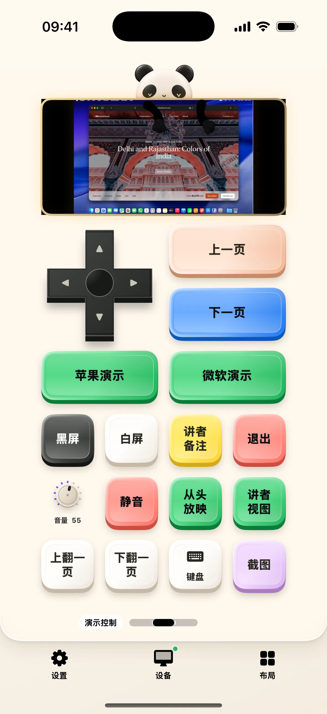

做演示时，手机可以同时承担翻页、指示重点和提醒时间。奶猫妙控的演示预设把这些操作分成「演讲辅助」「演示控制」「演讲计时」三个桌面：讲解时用辅助工具，放映时用快捷键，排练时看计时。
先把放映操作准备好
在 Mac 打开 Keynote 或 PowerPoint 并进入需要演示的文件。演示控制桌面提供前后翻页、黑屏、白屏、退出放映及相关快捷操作。正式开始前，用当前演示软件实际试一次；放映状态与自定义快捷键会影响按钮的响应。
让观众跟上你正在讲的位置
演讲辅助提供触控或体感激光笔、局部放大、画板、提词、互动表情、弹幕与音效。需要指向细节时使用激光笔，需要解释局部时再打开放大镜。每种工具可以单独使用，不必在一次演示中全部开启。

把手机画面加入 Mac 演示
当前版本支持将手机画面或摄像头内容送到 Mac 的演示窗口，用于展示手机操作或现场画面。屏幕共享由系统录屏入口启动，摄像头使用需获得授权。画面传输与电脑屏幕预览是不同方向的功能，开始前应检查投影窗口的位置和尺寸。
排练时给时间留出位置
演讲计时桌面保留秒表与倒计时。按内容段落排练，观察讲到某页时用了多久，再调整讲稿。现场音效可以使用已有声音或自定义文件；请在会场实际音量下试听一次。
开始使用
- 打开演示文件，连接手机与 Mac。
- 在演示控制页验证翻页和退出放映。
- 切到演讲辅助配置需要的工具，再在计时页排练。
常见问题
需要单独购买翻页器吗？
奶猫妙控通过配对的手机发送演示操作，不要求额外翻页器。
可以共享 iPhone 屏幕到 Mac 吗？
可以通过系统录屏流程共享到 Mac 演示窗口；需要同时使用支持该功能的新版两端应用。
本文对应 1.2.0。查看更新说明，或加入 iPhone / iPad TestFlight。